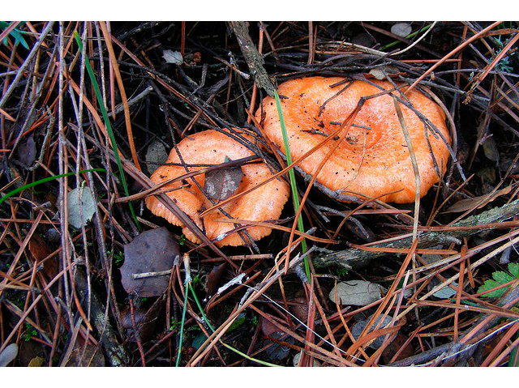
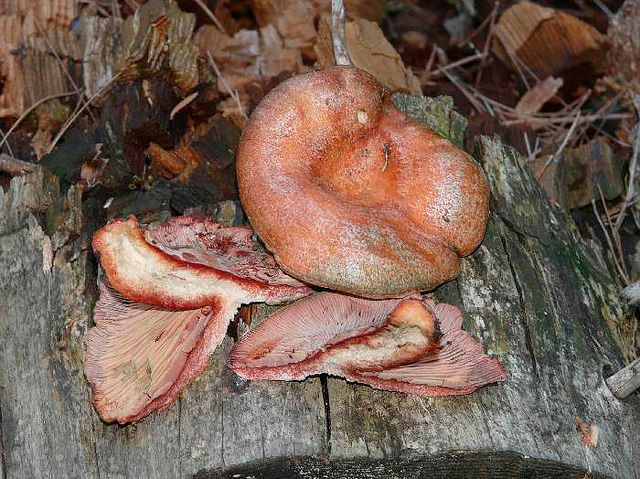
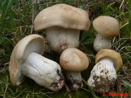
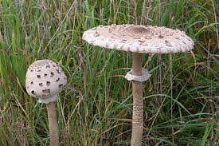
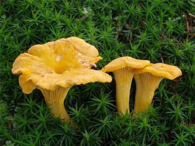
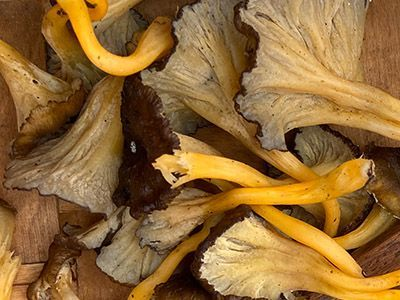
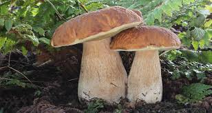
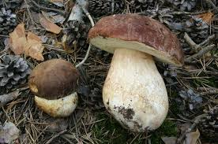

o Lactarius
o Perretxico
(de la muerte)

(Pinícola)
01/11/2024
En esta web, voy a mostrar algunas de las setas comestibles que conozco y que se pueden recoger cerca de la zona indicada en el mapa.
Para proteger los 'cados', las ubicaciones no serán precisas.
No es el objetivo de esta web publicar zonas exactas de recogida.
A tener en cuenta en cualquier ocasión:
Herramientas y Equipo para Recoger Setas:
Puedes seguir los enlaces a la Wikipedia para obtener información de cada una de ellas,
ademas tambien puedes ampliar las imágenes a su tamaño original.
| COMESTIBLES | Nombre Común | Nombre Científico | Variedad | Información externa | Foto |
|---|---|---|---|---|---|
| Robellón | Niscalo o Lactarius |
Deliciosus | Wikipedia |  | |
| Sanguifluus | Wikipedia |  | |||
| Usón o Perretxico |
Calocybe Gambosa | Wikipedia |  | ||
| Parasol | Macrolepiota procera | >Wikipedia |  | ||
| Trompetilla | Cantharellus | cibarius | Wikipedia |  | |
| Lutescens | Wikipedia |  | |||
| Cornucopioides (de la muerte) |
Wikipedia | |
|||
| Boleto | Boletus | Edulis | Wikipedia |  | |
| Pinophilus (Pinícola) |
Wikipedia |  | |||